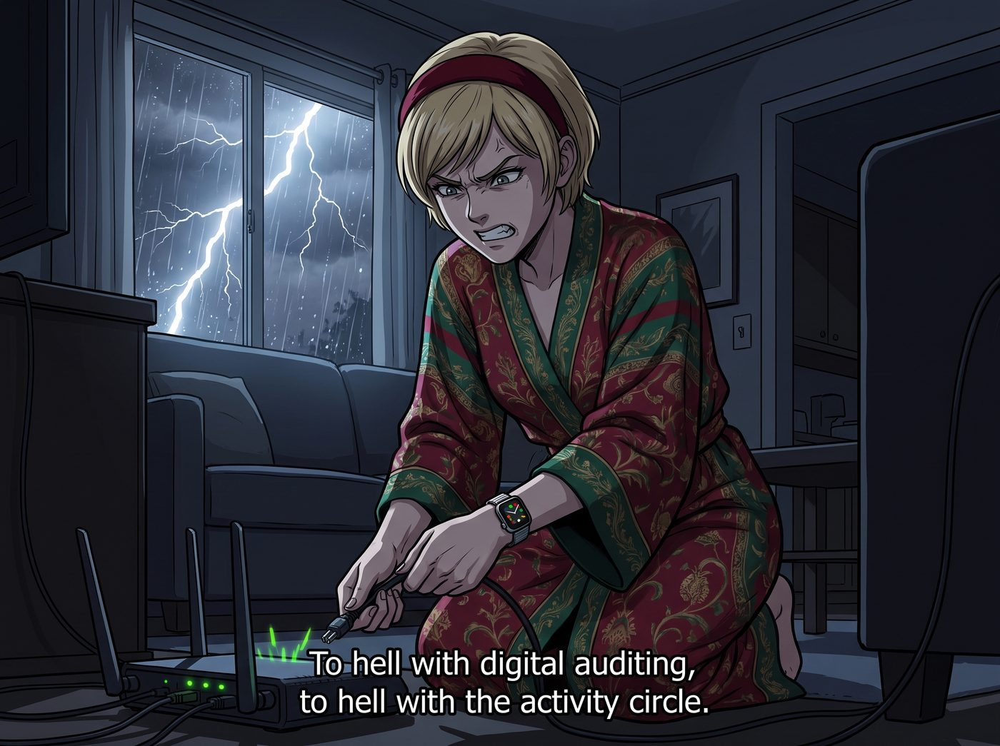

五十毫秒的降維打擊

在一個大雨滂沱的深夜，Victoria Chase 終於忍受不了手腕上那塊 Apple Watch 孜孜不倦的站立提醒與呼吸冥想建議，決定採取最原始、也是最暴力的物理手段：拔除二號車廂的 Wi-Fi 路由器電源。
名媛穿著真絲睡袍，像個準備執行暗殺任務的特工一樣，躡手躡腳地摸黑走到起居室角落的網路機櫃前。
她看著路由器上閃爍的綠燈，彷彿看到了科技巨頭和實習生 Lily 在對她嘲笑。
「去你的數位審計，去你的活動圓環。」Victoria 咬著牙，一把拔掉了路由器的電源插頭。
一、無法逃脫的提示音
綠燈瞬間熄滅。車廂裡陷入了絕對的安靜。
Victoria 得意地勾起嘴角，準備回到床上睡個沒有任何電子設備干擾的美容覺。
「叮。」
在靜謐的黑暗中，她手腕上的 Apple Watch 突然發出一聲清脆的提示音，螢幕在黑暗中亮起，幽幽的藍光照亮了名媛瞬間僵住的臉。
「您的睡眠目標尚未達成。請放下手機，準備就寢。」
「這不可能！」Victoria 壓低聲音崩潰地嘶吼，她瘋狂點擊手錶螢幕，「我已經拔了 Wi-Fi！妳這破錶哪來的網路？！」
「Victoria 學姐，夜間突然拔除主網路電源，很容易導致未保存的雲端資料損毀喔。」
一個軟糯、平靜，在黑暗中卻顯得無比空靈的聲音從廚房傳來。Lily 穿著小熊睡衣，手裡端著一杯剛用微波爐加熱好的熱牛奶，推了推在黑暗中反光的圓框眼鏡，像個午夜幽靈般靜靜地看著 Victoria。
「Lily……妳幹了什麼？為什麼這該死的生態系還在運作？」Victoria 抱著頭，感覺自己正在面對某種無法戰勝的超自然力量。
二、偽裝成雷達天線的秘密
「只是一個簡單的業務連續性備援計畫，學姐。」
Lily 喝了一口熱牛奶，溫柔地解釋：「考慮到奧林匹亞半島的極端天氣經常導致傳統有線網路中斷，為了確保我能隨時向州政府和聯邦機構發送投訴信，我在三個月前就以偏遠地區教育弱勢群體的名義，向衛星網路公司申請了當時還在極少數內部測試階段的企業級終端。」
Lily 走到機櫃前，指著一個隱藏在暗處的白色小盒子：「那個接收盤就偽裝成廢棄的雷達天線，焊在 Chloe 學姐的皮卡車頂上。當您拔掉主路由器的電源時，這套系統的雙 WAN 口無縫故障轉移機制會在 50 毫秒內自動接管車廂內的所有網路連線。對於您的 Apple Watch 來說，網路甚至沒有發生過任何中斷。」
Victoria 呆呆地看著那個發出微弱白光的小盒子，感覺自己的靈魂受到了降維打擊。
「妳……妳居然用衛星巨頭的網路，來確保科技公司能繼續監視我的睡眠？」Victoria 屈辱地跌坐在沙發上。
「資本家之間的基礎設施是可以互相借用的，只要它符合我們的行政效率。」Lily 乖巧地走過來，將熱牛奶遞給 Victoria，「而且，Apple Watch 的資料即使在斷網狀態下也會暫存在本地晶片裡，等恢復連線後再上傳。物理斷網是無法逃避數位審計的，學姐。」
三、深夜的混亂集合
這時，Chloe 的房門猛地被推開，街頭霸王頂著一頭亂髮衝了出來，手裡還拿著遊戲手把。
「剛才網路是閃斷了一下嗎？！我的 Ping 值剛才跳到了 100 毫秒！差點害我被爆頭！」Chloe 怒氣衝衝地四處張望，然後看到了拿著插頭的 Victoria。
「Victoria！妳半夜不睡覺拔路由器幹嘛？！想謀殺我的排位賽嗎？！」
「我是在拯救我們的隱私！妳這個被遊戲蒙蔽雙眼的白痴！」Victoria 絕望地反擊。
Max 揉著眼睛從房間裡走出來，脖子上依然掛著那副降噪耳機（因為她把降噪當成耳塞來用）。她看著一片混亂的客廳，無奈地嘆了口氣。
「好了，大家不要吵了。」Kate 也披著毛衣出現了，小天使依然保持著那種能安撫一切的溫柔頻率。她走到 Victoria 身邊，輕輕拍了拍她的肩膀，「Victoria，既然睡不著，要不要喝完這杯牛奶，我們一起來做睡前禱告？把煩惱都交給主，心跳自然就會平穩下來了，手錶也就不會再響了呢。」
在 Kate 的聖光注視下，在 Lily 無懈可擊的衛星備援系統面前，Victoria 徹底放棄了抵抗。
她默默地喝了一口熱牛奶，看著手腕上那個彷彿住著一個賽博教導主任的手錶，流下了一滴屬於舊時代人類的眼淚。在這個車廂裡，試圖用物理手段去對抗一個武裝到衛星級別的實習生，顯然是她這輩子做過最愚蠢的戰略決策。